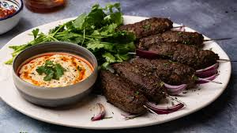

Kofta

Description
These kofta kebabs are made with ground lamb that's seasoned with garlic and six different kinds of spices, then molded onto skewers and cooked on the grill. They are very good! Serve with yogurt, flatbread, lettuce, tomato, and cucumber.
Ingredients
3 tablespoons grated onion
Steps
Mash garlic into a paste with salt using a mortar and pestle or the flat side of a chef's knife on your cutting board.
Mix garlic into lamb with onion, parsley, coriander, cumin, cinnamon, allspice, cayenne pepper, ginger, and pepper in a mixing bowl until well blended.
Form mixture into 28 balls. Form each ball around the tip of a skewer, flattening it into a 2-inch oval; repeat with remaining skewers. Place kebabs onto a baking sheet, cover, and refrigerate for at least 30 minutes, or up to 12 hours.
Preheat an outdoor grill for medium heat and lightly oil the grate.